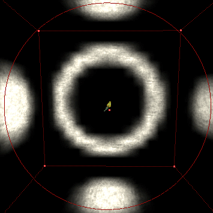
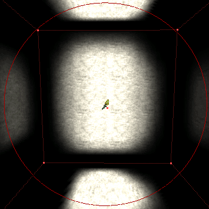

Actor (UT)/Lighting
Any actor can be made to give off light by setting these properties. For example, it's often useful when testing Triggers to make them cast a small circle of light so you know where to walk to activate them.
LightColor
This property group determines the colour of the light. For examples of settings, see Colors.
- LightBrightness
- How bright the light should be from source and outwards.
- LightHue
- Allows you to select a color through the default color spectrum. The values range from 0 to 255. Affects the color chosen.
- LightSaturation
- This value sets the amount of white light to mix with the color selected. If the value is set to 0, it will be the pure color. The higher the value, the less rich the color becomes. This is very effective when creating realistic lighting schemes. The default saturation is 127. Affects the chosen color.
Lighting
- bActorShadows
- Unused.
- bCorona
- Adds a corona to the light (the effect that is often called a "lens flare", incorrectly). A texture needs to be set under Display → Skin. See Corona for full instructions.
- bLensFlare
- Unused.
- bSpecialLit
- Light only affect walls and items with the Special Lit true. See Special Lit for more information.
- LightCone
- Changes the size of the lightbeam in specific lights such as the spotlight.
- LightEffect
- Adds an animation to the light. (Further down for specs.).
- LightPeriod
- Sets speed of selected LightType and/or LightEffect.
- LightPhase
- Start of light animation cycle.
- LightRadius
- Radius of the light.
- LightType
- What kind of light (Further down for specs.).
- VolumeBright
- When in a FogZone, used to set how bright the fog around the light source is.
- VolumeFog
- When in a FogZone, sets how thick the fog is around the light.
- VolumeRadius
- When in a Fogzone, sets the distance in which the light casts fog.
question: should the following sets of options be on a page of their own? —Tarquin
LightEffect
Light effects are animated shapes that affect surfaces within its radius.
- TorchWaver
- Makes the light shimmer a little, ideal when used in conjunction with animated flames (such as in the GreatFire texture package).
- FireWaver
- As the TorchWaver but more "drastic". Best when used with large-scale flame animations.
- WateryShimmer
- Also like the TorchWaver but more wave and glimmer feel. Best if used with water animated textures.
- SearchLight
- A rotating spotlight (Adjust speed with LightPeriod).
- SlowWave
- A wave that starts from the middle and flows out.
- FastWave
- As SlowWave but at a faster rate.
- Shock
- A small pulsating light, fast up and slowly down.
|
![[light.disco]](images/light-disco.gif) Light Effect: Disco |
|
![[light.nonincidence]](images/light-nonincidence.gif) Light Effect: Non-Incidence |
|

Light Effect: Shell |
|
![[light.interference]](images/light-interference.gif) Light Effect: Interference |
|

Light Effect: Cylinder |
LightTypes
Light types affect the brightness and darkness values of a lights' lighteffect.
- None
- No light is cast.
GRAF1K: What I've done isn't exactly fine art, but a bit better I think. Tarquin: I think rev.32 is best. The images are each captioned, so there's no confusion. I much prefer a DL to a table for this sort of thing. If you guys think the images still don't work, then let's taken them out of the DL entirely and make a gallery page or something. Sobiwan: I could always downsize the images; that would help keep it all together more so than it is now. Tarquin: I persoanlyl think it's fine as it is now |
![[light.steady]](images/light-steady.gif) Light Type: Steady |
Miscellaneous
Other actor properties that are relevant to casting light:
- Advanced → bDirectional
- Shows a directional arrow on an actor in UnrealEd. This allows rotation to be set with the mouse as well as in the Actor (UT)/Movement properties. Spotlights have this set to true by default.
- Display → DrawScale
- Affects light actor size in editor and size of a corona in game.
- Display → Skin
- The texture used for a lens flare and TexturePaletteOnce/Loop effect.
Related Topics
- Lighting is the hub for all things light
- Understand Lighting Basics
- Understand all things Actor Overview
- Understand the Light (UT) class
- Understanding is half the battle!